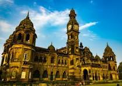

kolhapur Kolhapur is one of the most significant cities in South Maharashtra and has been a hub of historical , religious, and cultural activities for centuries.
It is famous for its unique food culture, including its signature Kolhapuri cuisine.
The city is situated in the western part of Maharashtra and is often referred to as "Dakshin Kashi" or
"Mahateerth". It boasts a rich history, which has given it various other names,
including Kollagiri,
Kolladigiripattan and Kollpur, all meaning "valley" [citation needed] Around 2 CE
Kolhapur's name was 'Kunta'.[
Back